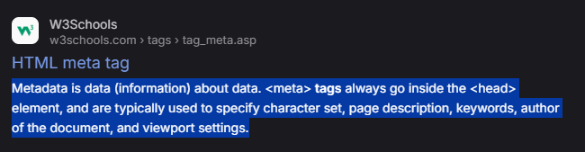

ABOVE IS THE REFERENCE (highlighted part) OF THE 'META TAG' USED WITH ITS ATTRIBUTE 'DESC'. It shows the description of a website after searching on SEs
If the developer does not includes the DESC, then it can be generated from the website's content which is a key responsibility of the SE's : Google, Brave, Bing,etc.
Previously 'META KEYWORDS' were used but are now obsolate. Google has considered that keyword meta tags are not longer used for ranking purposes as SEs now focus on the actual content of the web pages rather than relying on meta keywords